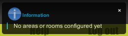

First use of Domogik¶
Purpose¶
In this page we will present you the different screens and sections of Domogik. If you already use Domogik you can directly go to ((Create_and_configure_your_house|the next page)).
Accessing to the Domogik web UI¶
At the end of the installation the installer script should have displayed this information :
- Administrator login
- Administrator password
- Domogik web UI url
So you should be now able to access to the Domogik web UI :)
Screens description¶
Home screen description¶
The first time you access Domogik you should see an information notification which tells you that there is no area or room yet created :
On the top of the screen you will get :
- Domogik banner.
- Main menu.
Under the main menu there are :
- On the left, the widgets zone of the house.
- On the right, the different places of your house ordered by areas. If you get rooms directly linked to your house they will appear before areas.
Visualization screen¶
On the top there will always be a navigation menu.

On the left you will see where you are in your house : House > Area > Room. Clicking on one of them will get you to the associated Visualization screen. Clicking on the Domogik logo will get you to the Home screen.
On the right there are two buttons :
- Customize : allows you to choose widgets and arrange them on the current screen.
- Menu : it will display the menu bar (the same than for the Home screen).
For house and areas¶
Under the navigation menu there are :
- On the left the widgets zone of the places (room, area).
- On the right the places and their main widgets.
For rooms¶
Under the navigation menu there are :
- On the top the title of the room and at the right the main widgets zone.
- On the bottom other widgets zone.
What next?¶
- ((Create_and_configure_your_house|Create and configure your house))